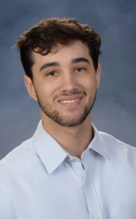

Cornell physics graduate specializing in mechanical design and electrical engineering. Builder of cutting-edge hardware, avid music listener, and lifelong learner.
Explore ProjectsPerformance test of Radio Transmitting Multi-Layer Insulation in a Bluefors Dilution Refrigerator, mapping thermal performance down to mK scales.
Read Case Study →Modeled and structurally evaluated a heavy-duty frame in SolidWorks capable of offsetting several hundred kilogram loads on a crane
Read Case Study →Designed specialized cooling racks in SolidWorks to optimize thermal dissipation for detector data-processing computers.
Read Case Study →Collaborated with cross-functional research teams to design and deploy complex multi-layer insulation systems for the primary camera module.
Read Case Study →Conducted physical characterization experiments to measure and model the stopping distance and energy loss of alpha particles.
Read Case Study →Analyzed atomic spectral line splitting under intense magnetic fields to evaluate fine-structure quantum phenomena.
Read Case Study →Utilized laser interferometry to measure spatial displacements and verify wave-optics interference patterns.
Read Case Study →Assessed the sound absorption metrics of a custom 3D-printed gyroid lattice using specialized laboratory equipment.
Read Case Study →SolidWorks, CAD, Circuit Design, Soldering, Cryogenic Systems, Structural Evaluation
Microsoft Office Suite, Python, Java, C++, Arduino, HTML/CSS, JavaScript, Ruby